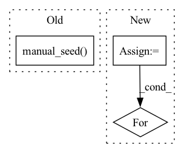

Pattern ID :27970
Before Change
def finetune(args):
// Preliminaries
torch.manual_seed( args.seed)
// Initialize Tokenizer
tokenizer = AutoTokenizer.from_pretrained(args.pretrained, model_max_length=args.msl, do_lower_case=args.lowercase)
add_token = {"additional_special_tokens": args.add_token}After Change
print(" Number of complete trials: ", len(complete_trials))
print("Best trial:")
trial = study.best_trial
print(" Validation Accuracy : {:.4f}".format(trial.value))
print(" Params: ")
for key, value in trial.params.items():
print(" {}: {}".format(key, value))
// Run standard finetuning without hyperparameter search
else:In pattern: SUPERPATTERN
Frequency: 3
Non-data size: 3
Instances Fragment ID: 82895168
Project Name: jcblaisecruz02/filipino-text-benchmarks
Commit Name: 15609e90770528e9ab579af62caf962d30560f76
Time: 2020-06-06
Author: jan_christian_cruz@dlsu.edu.ph
File Name: train.py
M Class Name: AnonimousClass
N Class Name: AnonimousClass
M Method Name: finetune(1)
N Method Name: finetune(1)
M Parent Class:
N Parent Class:
M File Name: train.py
N File Name: train.py
M Start Line: 55
M End Line: 115
N Start Line: 143
N End Line: 166
Before Change
def test_lsymeig_with_M(dtype, device):
// generate the matrix
na = 10
torch.manual_seed( 123)
A1 = (torch.rand((1,na,na))*0.1).to(dtype).to(device).requires_grad_(True)
diag = (torch.arange(na, dtype=dtype)+1.0).to(device).unsqueeze(0).requires_grad_(True)
Acls = get_diagonally_dominant_class(na)
params = (A1, diag)After Change
eye = torch.eye(UMU.shape[-1]).to(UMU.dtype).to(UMU.device)
assert torch.allclose(UMU, eye, atol=1e-4, rtol=1e-6)
all_options = [
{
"method": "exacteig",
},
{
"method": "davidson",
"nguess": 10,
"min_eps": 1e-9
}
]
for options in all_options:
runtest(options)
@device_dtype_float_test()
def test_solve(dtype, device): Fragment ID: 82895170
Project Name: xitorch/xitorch
Commit Name: 6b67fab466f1d4383bdef5baf54ac968608b9561
Time: 2020-02-10
Author: firman.kasim@gmail.com
File Name: lintorch/tests/test_fcns.py
M Class Name: AnonimousClass
N Class Name: AnonimousClass
M Method Name: test_lsymeig_with_M(2)
N Method Name: test_lsymeig_with_M(2)
M Parent Class:
N Parent Class:
M File Name: lintorch/tests/test_fcns.py
N File Name: lintorch/tests/test_fcns.py
M Start Line: 48
M End Line: 77
N Start Line: 81
N End Line: 93
Before Change
def test_lsymeig(dtype, device):
// generate the matrix
na = 10
torch.manual_seed( 123)
A1 = (torch.rand((1,na,na))*0.1).to(dtype).to(device).requires_grad_(True)
diag = (torch.arange(na, dtype=dtype)+1.0).to(device).unsqueeze(0).requires_grad_(True)
Acls = get_diagonally_dominant_class(na)
params = (A1, diag)After Change
eye = torch.eye(UTU.shape[-1]).unsqueeze(0).to(UTU.dtype).to(UTU.device)
assert torch.allclose(UTU, eye, atol=1e-5, rtol=1e-5)
all_options = [{
"method": "davidson",
"min_eps": 1e-9,
},
{
"method": "exacteig",
}]
for options in all_options:
runtest(options)
@device_dtype_float_test()
def test_lsymeig_with_M(dtype, device): Fragment ID: 82895171
Project Name: xitorch/xitorch
Commit Name: 99c518845fb5b0593d741dd0c4fbefef4719486a
Time: 2020-02-10
Author: firman.kasim@gmail.com
File Name: lintorch/tests/test_fcns.py
M Class Name: AnonimousClass
N Class Name: AnonimousClass
M Method Name: test_lsymeig(2)
N Method Name: test_lsymeig(2)
M Parent Class:
N Parent Class:
M File Name: lintorch/tests/test_fcns.py
N File Name: lintorch/tests/test_fcns.py
M Start Line: 8
M End Line: 34
N Start Line: 35
N End Line: 44